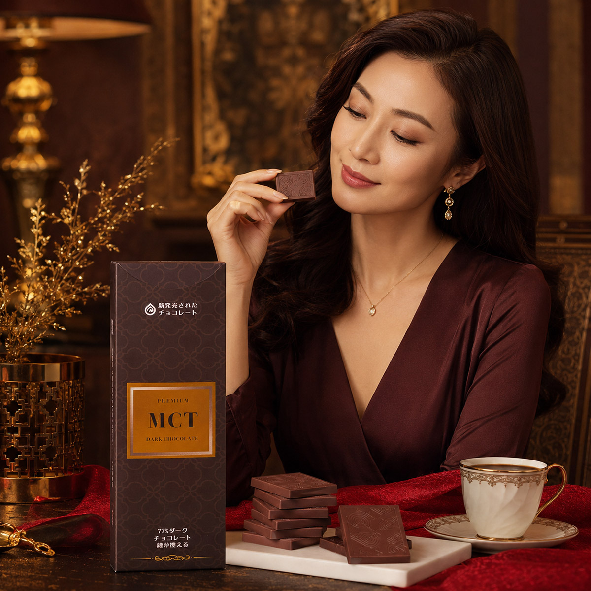
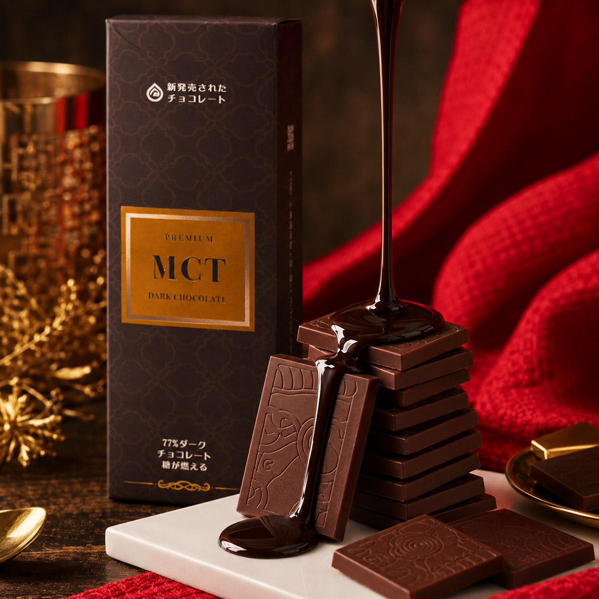
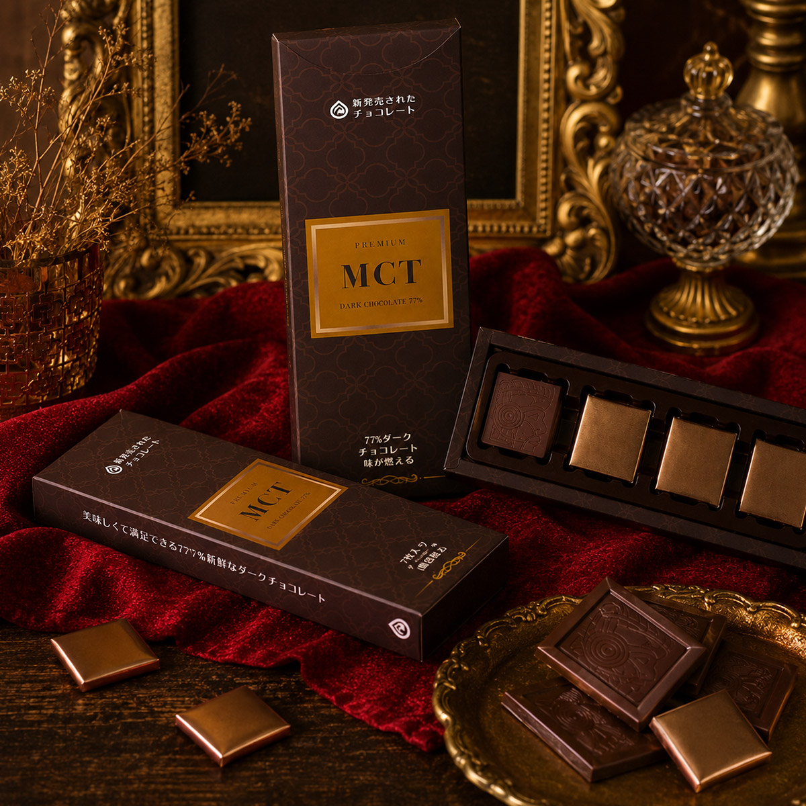
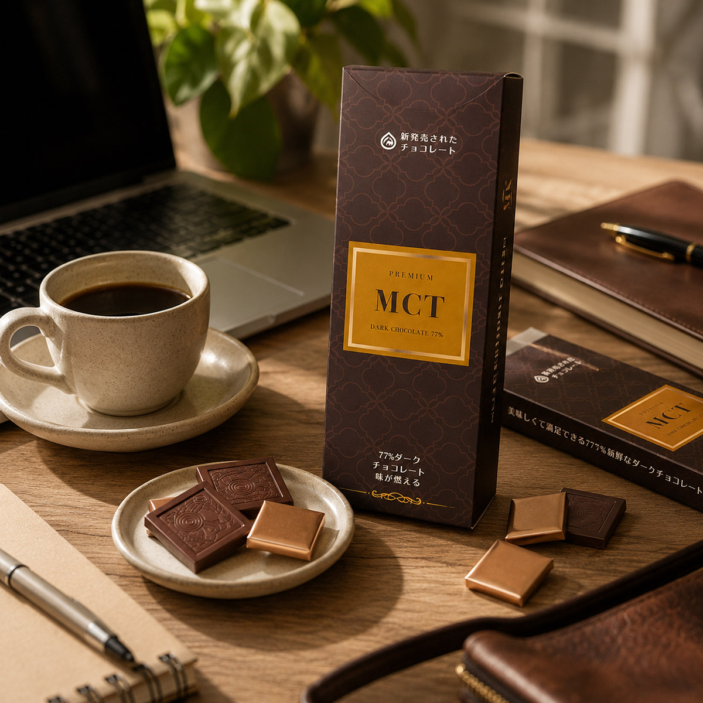
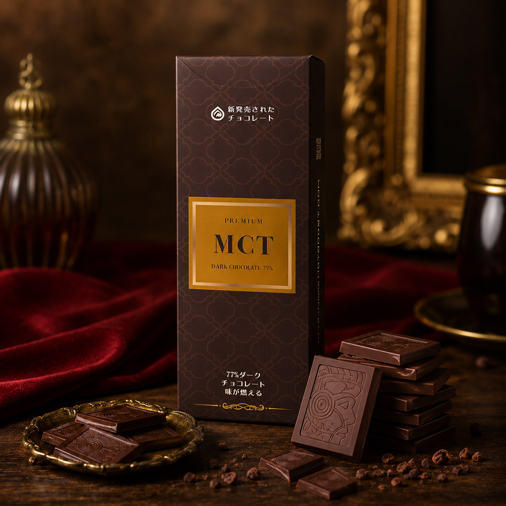
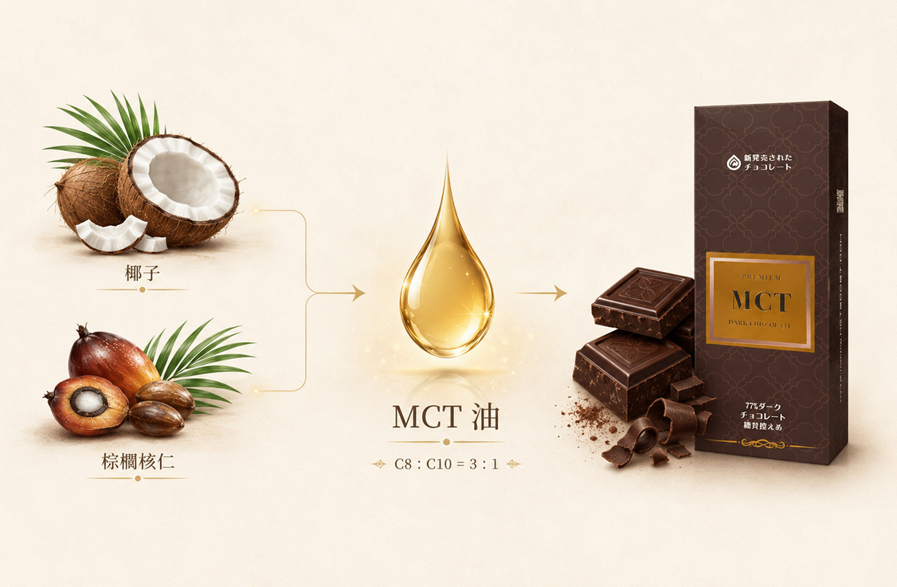
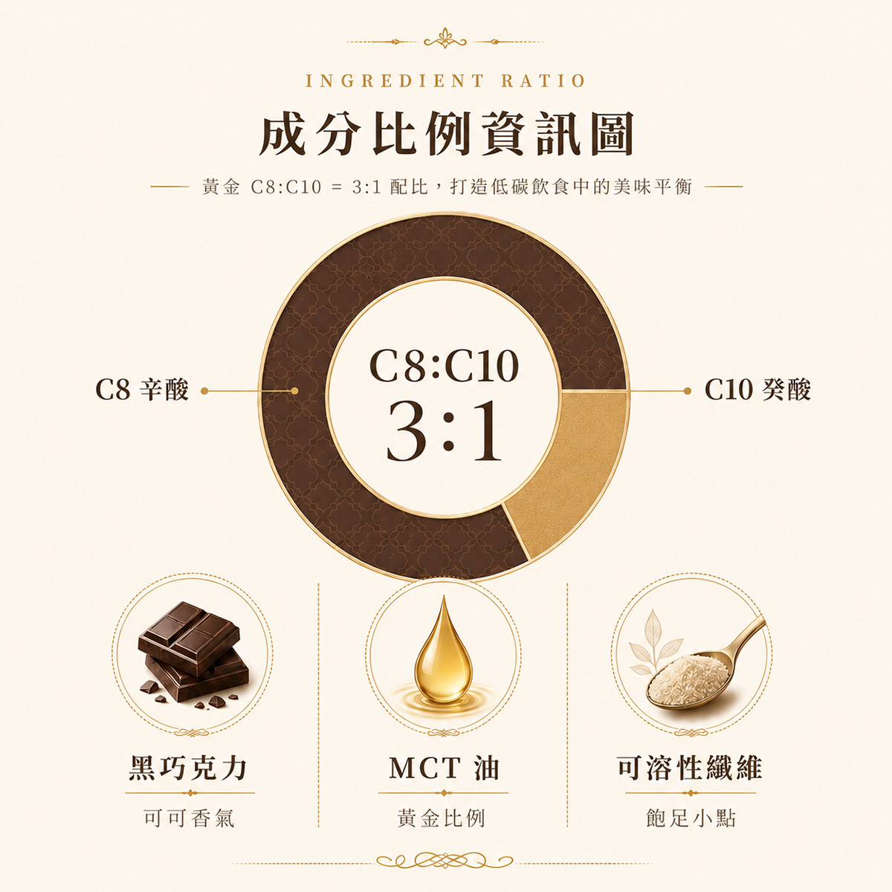
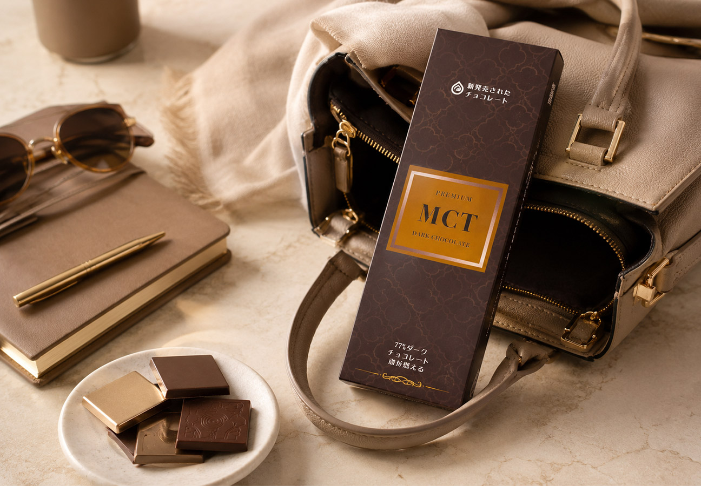

黑巧克力 × MCT 油，為低碳生活準備的一片剛剛好
MCT Plus 生酮巧克力將黑巧克力的濃郁香氣，結合純正 MCT 油，以 C8 與 C10 黃金比例 3:1 調配，打造適合低碳飲食、生酮飲食與日常補給需求的機能型巧克力。
它不是單純為了嘴饞而存在，而是希望讓忙碌生活裡的每一次補給，都能更有節奏、更有儀式感。





正在進行低碳飲食、生酮飲食，或想減少一般甜食攝取的人，都能將 MCT Plus 生酮巧克力作為日常小點，讓飲食控制不必少了巧克力的幸福感。
為低碳生活留一片巧克力的餘裕
很多人在調整飲食時，最難放下的不是正餐，而是午後那一點「想吃點什麼」的慾望。
MCT Plus 生酮巧克力想解決的，正是這種日常中的小空檔。它將黑巧克力的香氣、MCT 油的低碳飲食應用，以及單片食用的便利性結合在一起，讓你在工作間、餐前餐後或想吃點甜的時候，都能有一個更講究的選擇。
它不是傳統甜食，也不是生硬的補給品，而是一款可以輕鬆融入生活節奏的機能型巧克力。
MCT 是 Medium-Chain Triglycerides，也就是中鏈脂肪酸油，常見於椰子、棕櫚核仁等天然植物來源。
相較於一般長鏈脂肪酸，MCT 常被應用在低碳飲食、生酮飲食與日常補給型飲食設計中。
MCT Plus 生酮巧克力將 MCT 油融入黑巧克力中，讓補給不再只是單純吞膠囊或直接食用油品，而是用更好入口、更有質感的方式，陪你維持日常飲食節奏。


黑巧克力帶有成熟、微苦、濃郁的可可香氣。相較於一般甜巧克力，黑巧克力更適合作為低碳飲食中的點心選擇，也能讓想吃甜食的時刻變得更有節制。
可可本身含有多酚、類黃酮與多種礦物質，是許多人在挑選巧克力時重視的營養來源之一。
C8 是 MCT 油中常被重視的類型，適合需要快速補給、維持日常節奏的人。對於工作繁忙、午後容易感到空檔，或正在調整低碳飲食的人來說，是很適合被放進日常飲食設計中的成分。
C10 能與 C8 搭配，讓整體補給節奏更完整。MCT Plus 生酮巧克力以 C8:C10＝3:1 的比例調配，讓每一片巧克力不只是入口香氣，也兼顧飲食規劃上的機能感。
可溶性纖維適合搭配日常飲食管理，能增加點心的飽足感，讓巧克力不只是「吃甜」，也能成為比較有計畫的小點選擇。
比起一般甜食更有飲食規劃感，適合想控制甜食攝取、又希望保留一點甜食幸福感的人。
保留可可成熟、微苦、濃郁的風味，吃起來不過度甜膩，也能帶出精品巧克力的層次感。
黑巧克力含可可多酚、類黃酮與多種礦物質，搭配可溶性纖維，讓想吃點甜的時刻也能更有節制。
C8 與 C10 以 3:1 調配，讓成分設計更明確，也更容易放進低碳與生酮飲食安排中。
不論是工作、外出、餐前餐後或午後休息，都能輕鬆食用，減少準備成本。
在控制飲食的同時，也能保留吃巧克力的滿足感；搭配黑咖啡、無糖茶或氣泡水都很適合。
用一片黑巧克力替代高糖點心，讓午後的小補給更簡單，也更有節制。
作為日常飲食中的小點安排，讓飲食控制不會太有壓力。
搭配黑咖啡、無糖茶或氣泡水，讓短短幾分鐘的休息更有質感。
單片食用方便，不需要複雜準備，放在包包或辦公室抽屜都很適合。
